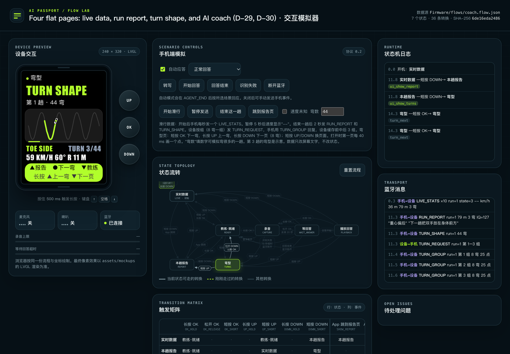

English · 简体中文
Heygo · AI Passport · Project summary
Ask the coach during a rest
AI Passport is a small handheld device for skiers. The user sees the data of the last run and hears the AI coach. The user does not take out the phone or remove the gloves. Sprints 0 to 16 are complete. The code of Sprint 17 is also complete.

What the team delivered
Coach voice
A long press of OK opens the Coach page. The user holds OK and asks a question. The phone does speech-to-text, the AI answer, and text-to-speech. The device plays the answer.
Run data and report
Live speed, drop, distance, turns, and time. After each run, a Heygo IQ (0 to 200) and one tip. The device opens the live data page at run start.
Turns
The line of each run, 8 turns on each page. The page shows the speed, angle, and radius of each turn.
Phone popups
Fall alert, voice notice, issue report, and achievement report. A popup opens at once and counts down 10 s. Any key closes it.
Quick answers
| Question | Answer | More |
|---|---|---|
| What does the device do? | It controls only the keys, microphone, speaker, and screen. The phone does all analysis and voice work. | Architecture and protocol |
| How is the firmware organized? | 7 layers, 3 own tasks, 10 states, and 83 transitions from a flow graph. | Firmware architecture |
| How is the firmware made? | Scripts make the flow code, fonts, and images. validate.sh builds and checks. You flash the merged image at 0x0. |
Firmware build |
| Is the memory sufficient? | The app uses 23.4% of the factory partition. Static DRAM is 47.2%. The LVGL pool peak is 76.6%. | Memory map |
| How does the user operate it? | Four pages at the same level make a loop. A short press of UP or DOWN changes the page. A long press of OK opens the coach. | Product and pages |
| What does it look like? | 25 screens that LVGL renders on the host, and two animations. | Screen gallery |
| What is the status? | Sprints 0 to 16 are complete. The code of Sprint 17 (D-34) is complete. It waits for confirmation. | Sprints |
| How long did it take? | 172 commits on main, from 10-16 18:02 to 10-18 11:51. | Project history |
| How does the team control quality? | A gate runs before each commit. Host tests, screen checks, and the simulator self-test must pass. | Quality and deployment |
Links
- Online simulator: https://azuresword.github.io/Heygo-AiPassport/. You can push the device keys in the browser.
- Repository: https://github.com/Azuresword/Heygo-AiPassport
- The book source is in
summary-book/. Runfigures.pyto make the figures. Then runbuild.shto makesummary/.